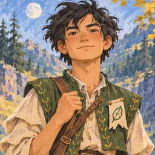
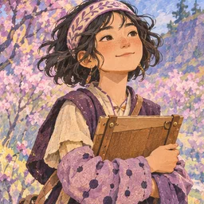
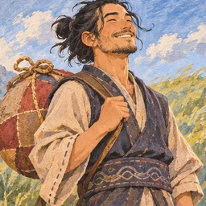

Тао Лист
воин 3 · ОЗ 31 · КД 11 · Скорость 30 фтУченик, который умеет собирать разрозненные предложения в ясный план
Короткий зелёный жилет, лента с собственноручно вышитым неровным листом, серьёзная улыбка перед стартом.
Ты год помогал готовить двор к занятиям и теперь хочешь сам выйти на большой круг. Впервые рядом с твоим именем написано «участник».
Открыть фигурку для поля
Оружие и заклинания
Оружие · Длинный меч, Ручной топор

Мира Нить
плут 3 · ОЗ 24 · КД 13 · Скорость 30 фтМастерица праздничных лент, вернувшая себе время на соревнования
Синий шарф, цветные пуговицы на рукавах и маленький альбом неожиданных узоров.
Ты всегда делала красивые вещи для чужих выступлений. В этот раз хочешь, чтобы скамья для гостей осталась пустой: твоё место на площадке.
Открыть фигурку для поля
Оружие и заклинания
Оружие · Рапира, Короткий лук
Орен Берег
жрец 3 · ОЗ 24 · КД 11 · Скорость 30 фтУченик двора, привыкший заботиться о людях и учащийся принимать помощь
Светлая куртка с широкими карманами, деревянный значок чаши, мягкие дорожные туфли.
На домашних занятиях ты часто добровольно уступал очередь. На турнир друзья пригласили тебя участником, а не человеком с запасным чаем.
Открыть фигурку для поля
Оружие и заклинания
Оружие · Боевой посох
Заклинания · Лечащее слово, Обнаружение магии

Сэя Пятно
волшебник 3 · ОЗ 20 · КД 12 · Скорость 30 фтХудожница учебных карточек, видящая несколько решений одного рисунка
Фиолетовые манжеты в чернильных точках, складная дощечка для рисунков, волосы под широким ободком.
Ты рисовала программы Мостового Двора и решила проверить, каково быть внутри собственного рисунка.
Открыть фигурку для поля
Оружие и заклинания
Оружие · Боевой посох
Заклинания · Обнаружение магии, Туманный шаг

Рю Тёплый Ветер
воин 3 · ОЗ 31 · КД 11 · Скорость 30 фтБывший участник одиночных состязаний, впервые выступающий в команде
Тёмный пояс с давно выцветшим узором, аккуратно подшитые рукава, смешной круглый дорожный мешок.
Ты хорошо знаешь ощущение личной победы, но ещё не знаешь, как обсуждать общую программу, если рядом люди с другими привычками.
Открыть фигурку для поля
Оружие и заклинания
Оружие · Длинный меч, Ручной топор

Нала Тихий Колокольчик
плут 3 · ОЗ 24 · КД 13 · Скорость 30 фтВнимательная участница, предпочитающая короткие записки длинным речам
Жёлтый воротник, тетрадь с широкими полями, крошечный колокольчик без язычка на шнурке.
Ты пришла потому, что двор обещал слышать записки так же хорошо, как слова. Хочется проверить это обещание перед настоящим стартом.
Открыть фигурку для поля
Оружие и заклинания
Оружие · Рапира, Короткий лук

Эйдо Медный Лист
жрец 3 · ОЗ 24 · КД 11 · Скорость 30 фтНачинающий любитель, привыкший учиться заново и задавать простые вопросы
Песочная жилетка, новые ещё жёсткие шнурки и значок с честной надписью «учусь».
Ты записался во двор позже остальных и не хочешь ждать воображаемого дня, когда станешь достаточно опытным для путешествия.
Открыть фигурку для поля
Оружие и заклинания
Оружие · Боевой посох
Заклинания · Лечащее слово, Обнаружение магии